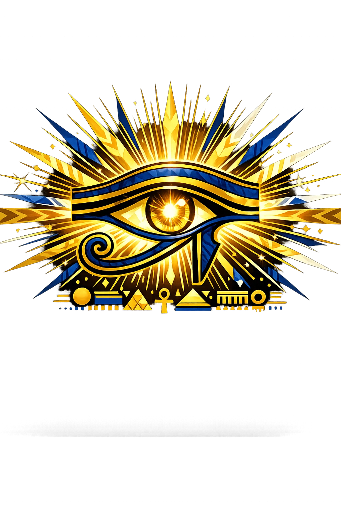

The Authentic Orthography
Truth · Justice · Cosmic Order · The Feather of Truth

Why mꜣ.com is the correct form
Mꜣꜥt
The complete scholarly transliteration with both the alef (ꜣ) and ayin (ꜥ) preserved. The fullest attested form in Egyptological reference works: Faulkner, Wb, and the TLA.
maat
Stripped of its identity, the name was reduced to plain Latin letters. The alef, ayin, and full Egyptian spelling were erased by systems that only understand a-z.
Mꜣ
The Unicode restoration preserves the Egyptian alef (ꜣ) that ASCII destroyed. This is the form that matches the owned domain — philological accuracy, not decoration.
mꜣ.com → xn--m-yw3e.com
The non-ASCII character in Mꜣ is encoded while the ASCII remains visible. To the DNS, it is Punycode. To humanity, it is Mꜣ.
How maat becomes Mꜣ
| Step | ASCII | Unicode | Type | Scholarly Note | |
|---|---|---|---|---|---|
| 01 | m | → | M | Same | Same |
| 02 | a | → | ꜣ | Special | Alef: glottal stop |
| 03 | a | → | — | Dropped | Omitted in the owned form mꜣ.com |
| 04 | t | → | — | Dropped | Omitted in the owned form mꜣ.com |
Why Mꜣ is classified as Tier-2 Basic
The PUNYCODEX tier system is built on Greek phonetic features — stress (acute accent) and vowel length (macron) — that define Tier-1 and Tier-2 names. Egyptian names do not carry these features, so Mꜣ is classified as Tier-2 Basic. The Unicode restoration preserves the Egyptian alef (ꜣ) that plain ASCII cannot represent. This is not decoration. It is the phonetic reality of the name, recovered from three millennia of Egyptological scholarship.
How the name was truly spoken
"MOO-ah" — with a deep glottal catch in the throat on the second syllable. The m is long and resonant. The ꜣ is not a smooth vowel; it is a stop, a moment of closure. Think of the sound between the syllables of "uh-oh," but deeper, more deliberate.
In our Tier-2 system, the alef (ꜣ) preserves a consonant that every Egyptological transliteration recognises but ASCII cannot render. While Greek Tier-1 names preserve stress and length, Egyptian names preserve consonantal depth — sounds produced in the throat that Latin letters simply do not possess.
Maat as cosmic order, not merely a goddess
Mꜣꜥt is not merely a deity. She is the architecture of existence itself — the force that holds the sun in its course, the Nile in its flood, the king on his throne, and the dead in their judgment. Without her, the cosmos collapses into isfet (chaos). With her, it endures.
The shut — the ostrich feather that is her hieroglyphic sign and her emblem. Light, precise, and incorruptible. In the Hall of Two Truths, your heart is weighed against this feather. If it is heavier, you are devoured.
The mkhat — the balance in the Hall of Osiris. Anubis adjusts the plumb-bob. Thoth records the verdict. The scales do not measure goodness; they measure truthfulness — whether your life aligned with mꜣꜥt.
In the Book of the Dead, Chapter 125, the deceased denies 42 sins before 42 judges — one for each nome of Egypt. "I have not done evil. I have not stolen. I have not lied." Each confession is an affirmation of mꜣꜥt.
At creation, the sun god Ra established mꜣꜥt as the governing principle of the universe. Every morning, as Ra's barque crosses the sky, Maat stands at the prow — she is the reason the sun rises. Every king of Egypt ruled as the "Lord of Maat" (nb-mꜣꜥt). Every temple inscription declares that the pharaoh "has done mꜣꜥt" for the gods. It is not a choice. It is the condition of existence.
Stories that shaped the Egyptian cosmos
In the Hall of Two Truths, before Osiris and the forty-two judges, the deceased's heart is placed on the scales of Anubis and weighed against the feather of Maat. If the heart is light — if the person lived in truth — they pass into the Field of Reeds. If it is heavy with sin, the demon Ammit devours it, and the soul is annihilated. This is not punishment. It is physics — the universe correcting itself.
Every dawn, Ra's solar barque crosses the sky. At the prow stands Maat herself — not as passenger, but as ballast. Without her, the boat would capsize; the sun would not rise; chaos would swallow the cosmos. In temple reliefs from Karnak to Edfu, the king presents Maat to Ra as an offering. The offering is not symbolic. It is the renewal of existence itself.
In the Book of the Heavenly Cow, Ra discovers that humanity has grown rebellious. He sends his Eye — the lioness goddess Sekhmet — to punish them. She slaughters until the fields run with blood. To stop her, Ra floods the land with beer dyed red, which she mistakes for blood and drinks until she passes out. The moral is stark: when mꜣꜥt is absent, there is no limit to destruction. Order is not natural. It must be enforced.
From the tomb of Amenemhat at Beni Hasan (c. 1900 BCE): "I have done mꜣꜥt for the lord of mꜣꜥt. I have not done isfet. I have given bread to the hungry, water to the thirsty, clothing to the naked." This is not piety. It is cosmic maintenance — the individual acting as an extension of Maat, keeping the universe from sliding back into chaos.
See how Mꜣ behaves in the PUNYCODEX Type Tool, with predictive autocomplete, character-by-character breakdown, and scholarly constraint validation.
maat
→
Mꜣ